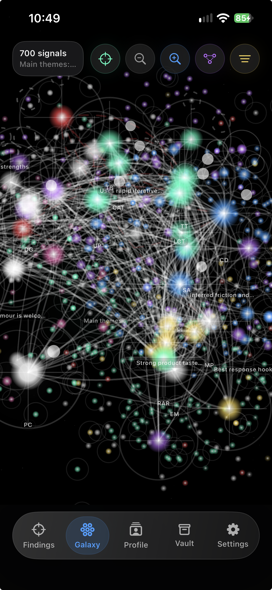

Research project · Context and privacy
Brane
Personal context for AI, with control over what is shared. Brane explores how selected information can improve an answer without exposing an entire personal history.
Its Safari extension also shows which trackers are present on each page.